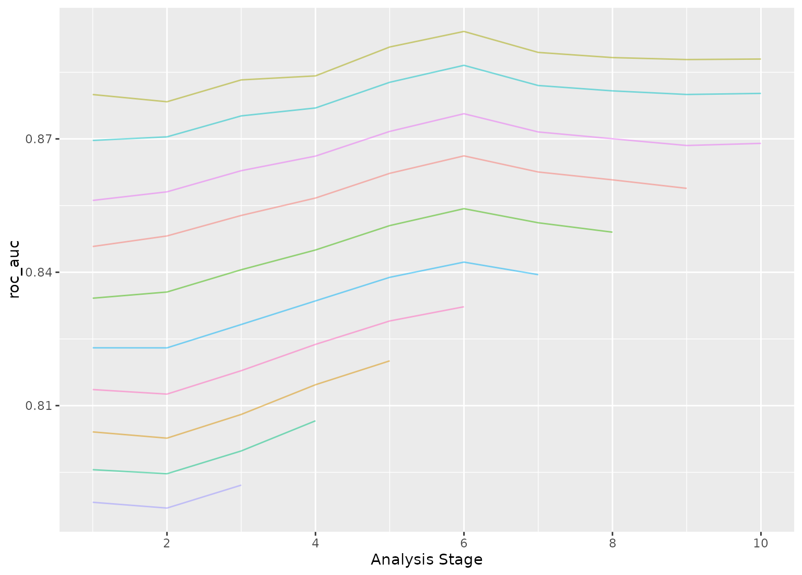

Efficient grid search via racing with win/loss statistics
Source:R/tune_race_win_loss.R
tune_race_win_loss.Rdtune_race_win_loss() computes a set of performance metrics (e.g. accuracy or RMSE)
for a pre-defined set of tuning parameters that correspond to a model or
recipe across one or more resamples of the data. After an initial number of
resamples have been evaluated, the process eliminates tuning parameter
combinations that are unlikely to be the best results using a statistical
model. For each pairwise combinations of tuning parameters, win/loss
statistics are calculated and a logistic regression model is used to measure
how likely each combination is to win overall.
Usage
tune_race_win_loss(object, ...)
# S3 method for class 'model_spec'
tune_race_win_loss(
object,
preprocessor,
resamples,
...,
param_info = NULL,
grid = 10,
metrics = NULL,
eval_time = NULL,
control = control_race()
)
# S3 method for class 'workflow'
tune_race_win_loss(
object,
resamples,
...,
param_info = NULL,
grid = 10,
metrics = NULL,
eval_time = NULL,
control = control_race()
)Arguments
- object
A
parsnipmodel specification or aworkflows::workflow().- ...
Not currently used.
- preprocessor
A traditional model formula or a recipe created using
recipes::recipe(). This is only required whenobjectis not a workflow.- resamples
An
rset()object that has multiple resamples (i.e., is not a validation set).- param_info
A
dials::parameters()object orNULL. If none is given, a parameters set is derived from other arguments. Passing this argument can be useful when parameter ranges need to be customized.- grid
A data frame of tuning combinations or a positive integer. The data frame should have columns for each parameter being tuned and rows for tuning parameter candidates. An integer denotes the number of candidate parameter sets to be created automatically.
- metrics
A
yardstick::metric_set()orNULL.- eval_time
A numeric vector of time points where dynamic event time metrics should be computed (e.g. the time-dependent ROC curve, etc). The values must be non-negative and should probably be no greater than the largest event time in the training set (See Details below).
- control
An object used to modify the tuning process. See
control_race()for more details.
Value
An object with primary class tune_race in the same standard format
as objects produced by tune::tune_grid().
Details
The technical details of this method are described in Kuhn (2014).
Racing methods are efficient approaches to grid search. Initially, the
function evaluates all tuning parameters on a small initial set of
resamples. The burn_in argument of control_race() sets the number of
initial resamples.
The performance statistics from the current set of resamples are converted
to win/loss/tie results. For example, for two parameters (j and k) in a
classification model that have each been resampled three times:
| area under the ROC curve |
-----------------------------
resample | parameter j | parameter k | winner
---------------------------------------------
1 | 0.81 | 0.92 | k
2 | 0.95 | 0.94 | j
3 | 0.79 | 0.81 | k
---------------------------------------------
After the third resample, parameter k has a 2:1 win/loss ratio versus j.
Parameters with equal results are treated as a half-win for each setting.
These statistics are determined for all pairwise combinations of the
parameters and a Bradley-Terry model is used to model these win/loss/tie
statistics. This model can compute the ability of a parameter combination to
win overall. A confidence interval for the winning ability is computed and
any settings whose interval includes zero are retained for future resamples
(since it is not statistically different form the best results).
The next resample is used with the remaining parameter combinations and the statistical analysis is updated. More candidate parameters may be excluded with each new resample that is processed.
The control_race() function contains are parameter for the significance cutoff
applied to the Bradley-Terry model results as well as other relevant arguments.
Censored regression models
With dynamic performance metrics (e.g. Brier or ROC curves), performance is
calculated for every value of eval_time but the first evaluation time
given by the user (e.g., eval_time[1]) is analyzed during racing.
Also, values of eval_time should be less than the largest observed event
time in the training data. For many non-parametric models, the results beyond
the largest time corresponding to an event are constant (or NA).
References
Kuhn, M 2014. "Futility Analysis in the Cross-Validation of Machine Learning Models." https://arxiv.org/abs/1405.6974.
Examples
# \donttest{
library(parsnip)
library(rsample)
library(dials)
## -----------------------------------------------------------------------------
if (rlang::is_installed(c("discrim", "modeldata"))) {
library(discrim)
data(two_class_dat, package = "modeldata")
set.seed(6376)
rs <- bootstraps(two_class_dat, times = 10)
## -----------------------------------------------------------------------------
# optimize an regularized discriminant analysis model
rda_spec <-
discrim_regularized(frac_common_cov = tune(), frac_identity = tune()) |>
set_engine("klaR")
## -----------------------------------------------------------------------------
ctrl <- control_race(verbose_elim = TRUE)
set.seed(11)
grid_wl <-
rda_spec |>
tune_race_win_loss(Class ~ ., resamples = rs, grid = 10, control = ctrl)
# Shows only the fully resampled parameters
show_best(grid_wl, metric = "roc_auc")
plot_race(grid_wl)
}
#> ℹ Racing will maximize the roc_auc metric.
#> ℹ Resamples are analyzed in a random order.
#> ℹ Bootstrap05: 1 eliminated; 9 candidates remain.
#> ℹ Bootstrap07: 1 eliminated; 8 candidates remain.
#> ℹ Bootstrap10: 1 eliminated; 7 candidates remain.
#> ℹ Bootstrap01: 1 eliminated; 6 candidates remain.
#> ℹ Bootstrap08: 1 eliminated; 5 candidates remain.
#> ℹ Bootstrap03: 1 eliminated; 4 candidates remain.
#> ℹ Bootstrap09: 1 eliminated; 3 candidates remain.

# }